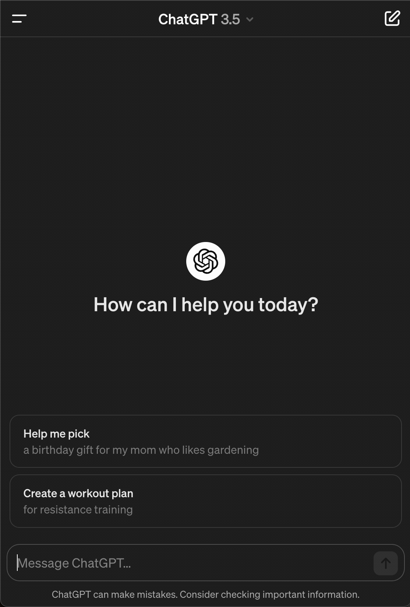

Originally from Baltimore, MD, I spent a significant part of my life writing, performing, and touring North America with Queensway. When I wasn't busy with music, I was either gaming or studying Computer Science.
Some of my earliest memories involve developing small games with friends, building dashboards to keep track of game stats,
and crafting simple bash scripts to automate random tasks on my first computer that somehow came pre-loaded with Ubuntu.
(I still don't know how Mom even managed to do that, but thank you for kickstarting me!)
Anyway, I still very much love music, but I truly thrive in tech start-ups. Here, I still get
to embrace the D.I.Y. mentality and live out my passion for developing, debugging, and engineering software.
Professionally, I use Python to build internal tools, JavaScript to develop web-app components (and bug fixes), and debug/review Java. I also live out of tools like Jira and Notion to build out documentation and run daily stand-up meetings to lead my team.
Operations and Support Engineer III - data.world
IT Technician - T. Rowe Price
June 2023, I completed my Bachelor of Science in Computer Science degree. In August 2023, I was accepted into University of Colorado - Boulder where I am currently enrolled and completing my Master of Science in Computer Science.
B.S. Computer Science - Western Governors University
M.S. Computer Science - University of Colorado, Boulder
CS AIGL App
data.world Docs Bot